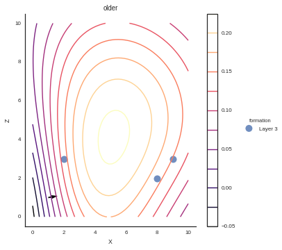

Example 2: Simple model¶
This notebook is a series of independent cells showing how to create a simple model from the beginning to the end using GeMpy
Importing dependencies¶
Visualize data¶
| G_x | G_y | G_z | X | Y | Z | azimuth | dip | formation | labels | order_series | polarity | series | ||
|---|---|---|---|---|---|---|---|---|---|---|---|---|---|---|
| interfaces | 0 | NaN | NaN | NaN | 0.5 | 4.0 | 7.0 | NaN | NaN | Layer 1 | ${\bf{x}}_{\alpha \, 0}^1$ | 1 | NaN | Default serie |
| 1 | NaN | NaN | NaN | 2.0 | 4.0 | 6.5 | NaN | NaN | Layer 1 | ${\bf{x}}_{\alpha \, 1}^1$ | 1 | NaN | Default serie | |
| 2 | NaN | NaN | NaN | 4.0 | 4.0 | 7.0 | NaN | NaN | Layer 1 | ${\bf{x}}_{\alpha \, 2}^1$ | 1 | NaN | Default serie | |
| 3 | NaN | NaN | NaN | 5.0 | 4.0 | 6.0 | NaN | NaN | Layer 1 | ${\bf{x}}_{\alpha \, 3}^1$ | 1 | NaN | Default serie | |
| 4 | NaN | NaN | NaN | 3.0 | 4.0 | 5.0 | NaN | NaN | Layer 2 | ${\bf{x}}_{\alpha \, 0}^2$ | 1 | NaN | Default serie | |
| 5 | NaN | NaN | NaN | 6.0 | 4.0 | 4.0 | NaN | NaN | Layer 2 | ${\bf{x}}_{\alpha \, 1}^2$ | 1 | NaN | Default serie | |
| 6 | NaN | NaN | NaN | 8.0 | 4.0 | 4.0 | NaN | NaN | Layer 2 | ${\bf{x}}_{\alpha \, 2}^2$ | 1 | NaN | Default serie | |
| 7 | NaN | NaN | NaN | 7.0 | 4.0 | 3.0 | NaN | NaN | Layer 2 | ${\bf{x}}_{\alpha \, 3}^2$ | 1 | NaN | Default serie | |
| 8 | NaN | NaN | NaN | 1.0 | 4.0 | 6.0 | NaN | NaN | Layer 2 | ${\bf{x}}_{\alpha \, 4}^2$ | 1 | NaN | Default serie | |
| foliations | 0 | 0.258819 | 1.584810e-17 | 0.965926 | 7.0 | 4.0 | 7.0 | 90.0 | 15.0 | Layer 1 | ${\bf{x}}_{\beta \,{0}}$ | 1 | 1.0 | Default serie |
| 1 | -0.342020 | -2.094269e-17 | 0.939693 | 2.0 | 4.0 | 4.0 | 90.0 | 340.0 | Layer 2 | ${\bf{x}}_{\beta \,{1}}$ | 1 | 1.0 | Default serie |
Interactive pandas Dataframe¶
Using qgrid it is possible to modify the tables in place as following:
Grid and potential field¶
We can see the potential field generated out of the data above
From potential field to block¶
The potential field describe the deposition form and direction of a basin. However, in most scenarios the real goal of structural modeling is the segmentation in layers of areas with significant change of properties (e.g. shales and carbonates). Since we need to provide at least one point per interface, we can easily compute the value of the potential field at the intersections between two layers. Therefore, by simple comparison between a concrete value of the potential field and the values of the interfaces it is possible to segment the domain into layers Fig X.
<Visualization.PlotData at 0x7fb7d1e4c208>
Combining potential fields: Depositional series¶
In reality, most geological settings are formed by a concatenation of depositional phases separated clearly by unconformity bounderies. Each of these phases can be model by a potential field. In order to capture this behavior, we can classify the formations that belong to individual depositional phase into categories or series. The potential field computed for each of these series could be seen as a sort of evolution of the basin if an unconformity did not occur. Finally, sorting the temporal relation between series allow to superpose the corresponding potential field at an specific location.
In the next example, we add a new serie consisting in a layer—’Layer 3’— Fig X, which generate the potential field of Fig X and subsequently the block Figure X.
I am here
| X | Y | Z | formation | labels | series | |
|---|---|---|---|---|---|---|
| 0 | 0.5 | 4.0 | 7.0 | Layer 1 | ${\bf{x}}_{\alpha \, 0}^1$ | Default serie |
| 1 | 2.0 | 4.0 | 6.5 | Layer 1 | ${\bf{x}}_{\alpha \, 1}^1$ | Default serie |
| 2 | 4.0 | 4.0 | 7.0 | Layer 1 | ${\bf{x}}_{\alpha \, 2}^1$ | Default serie |
| 3 | 5.0 | 4.0 | 6.0 | Layer 1 | ${\bf{x}}_{\alpha \, 3}^1$ | Default serie |
| 4 | 3.0 | 4.0 | 5.0 | Layer 2 | ${\bf{x}}_{\alpha \, 0}^2$ | Default serie |
| 5 | 6.0 | 4.0 | 4.0 | Layer 2 | ${\bf{x}}_{\alpha \, 1}^2$ | Default serie |
| 6 | 8.0 | 4.0 | 4.0 | Layer 2 | ${\bf{x}}_{\alpha \, 2}^2$ | Default serie |
| 7 | 7.0 | 4.0 | 3.0 | Layer 2 | ${\bf{x}}_{\alpha \, 3}^2$ | Default serie |
| 8 | 1.0 | 4.0 | 6.0 | Layer 2 | ${\bf{x}}_{\alpha \, 4}^2$ | Default serie |
| 0 | 2.0 | 4.0 | 3.0 | Layer 3 | ${\bf{x}}_{\alpha \, 0}^3$ | Default serie |
| 1 | 8.0 | 4.0 | 2.0 | Layer 3 | ${\bf{x}}_{\alpha \, 1}^3$ | Default serie |
| 2 | 9.0 | 4.0 | 3.0 | Layer 3 | ${\bf{x}}_{\alpha \, 2}^3$ | Default serie |
| G_x | G_y | G_z | X | Y | Z | azimuth | dip | formation | labels | polarity | series | |
|---|---|---|---|---|---|---|---|---|---|---|---|---|
| 0 | 0.258819 | 1.584810e-17 | 0.965926 | 7.0 | 4.0 | 7.0 | 90.0 | 15.0 | Layer 1 | ${\bf{x}}_{\beta \,{0}}$ | 1.0 | Default serie |
| 1 | -0.342020 | -2.094269e-17 | 0.939693 | 2.0 | 4.0 | 4.0 | 90.0 | 340.0 | Layer 2 | ${\bf{x}}_{\beta \,{1}}$ | 1.0 | Default serie |
| 0 | 0.984808 | 6.030208e-17 | 0.173648 | 1.0 | 4.0 | 1.0 | 90.0 | 80.0 | Layer 3 | ${\bf{x}}_{\beta \,{2}}$ | 1.0 | Default serie |
<Visualization.PlotData at 0x7fb7d2c3a2b0>
This potential field gives the following block
| G_x | G_y | G_z | X | Y | Z | azimuth | dip | formation | labels | polarity | series | ||
|---|---|---|---|---|---|---|---|---|---|---|---|---|---|
| interfaces | 0 | NaN | NaN | NaN | 0.5 | 4.0 | 7.0 | NaN | NaN | Layer 1 | ${\bf{x}}_{\alpha \, 0}^1$ | NaN | younger |
| 1 | NaN | NaN | NaN | 2.0 | 4.0 | 6.5 | NaN | NaN | Layer 1 | ${\bf{x}}_{\alpha \, 1}^1$ | NaN | younger | |
| 2 | NaN | NaN | NaN | 4.0 | 4.0 | 7.0 | NaN | NaN | Layer 1 | ${\bf{x}}_{\alpha \, 2}^1$ | NaN | younger | |
| 3 | NaN | NaN | NaN | 5.0 | 4.0 | 6.0 | NaN | NaN | Layer 1 | ${\bf{x}}_{\alpha \, 3}^1$ | NaN | younger | |
| 4 | NaN | NaN | NaN | 3.0 | 4.0 | 5.0 | NaN | NaN | Layer 2 | ${\bf{x}}_{\alpha \, 0}^2$ | NaN | younger | |
| 5 | NaN | NaN | NaN | 6.0 | 4.0 | 4.0 | NaN | NaN | Layer 2 | ${\bf{x}}_{\alpha \, 1}^2$ | NaN | younger | |
| 6 | NaN | NaN | NaN | 8.0 | 4.0 | 4.0 | NaN | NaN | Layer 2 | ${\bf{x}}_{\alpha \, 2}^2$ | NaN | younger | |
| 7 | NaN | NaN | NaN | 7.0 | 4.0 | 3.0 | NaN | NaN | Layer 2 | ${\bf{x}}_{\alpha \, 3}^2$ | NaN | younger | |
| 8 | NaN | NaN | NaN | 1.0 | 4.0 | 6.0 | NaN | NaN | Layer 2 | ${\bf{x}}_{\alpha \, 4}^2$ | NaN | younger | |
| 0 | NaN | NaN | NaN | 2.0 | 4.0 | 3.0 | NaN | NaN | Layer 3 | ${\bf{x}}_{\alpha \, 0}^3$ | NaN | older | |
| 1 | NaN | NaN | NaN | 8.0 | 4.0 | 2.0 | NaN | NaN | Layer 3 | ${\bf{x}}_{\alpha \, 1}^3$ | NaN | older | |
| 2 | NaN | NaN | NaN | 9.0 | 4.0 | 3.0 | NaN | NaN | Layer 3 | ${\bf{x}}_{\alpha \, 2}^3$ | NaN | older | |
| foliations | 0 | 0.258819 | 1.584810e-17 | 0.965926 | 7.0 | 4.0 | 7.0 | 90.0 | 15.0 | Layer 1 | ${\bf{x}}_{\beta \,{0}}$ | 1.0 | younger |
| 1 | -0.342020 | -2.094269e-17 | 0.939693 | 2.0 | 4.0 | 4.0 | 90.0 | 340.0 | Layer 2 | ${\bf{x}}_{\beta \,{1}}$ | 1.0 | younger | |
| 0 | 0.984808 | 6.030208e-17 | 0.173648 | 1.0 | 4.0 | 1.0 | 90.0 | 80.0 | Layer 3 | ${\bf{x}}_{\beta \,{2}}$ | 1.0 | older |
Combining both potential field where the first potential field is younger than the second we can obtain the following structure.
<Visualization.PlotData at 0x7fb7c35cd828>